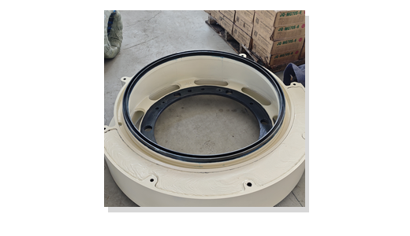

Mantle and bowl liner sets
Confirm chamber, feed size, CSS, rock type and current service life to select Mn13Cr2, Mn18Cr2, Mn22Cr2 or another suitable wear material.
GP series compatibility page
XCT Mining supports GP series style cone crusher maintenance with aftermarket liners, bronze parts, eccentric counterweights and custom machined spares.
Metso and Nordberg names are used only to identify compatible replacement applications. XCT Mining is an independent aftermarket supplier.

Confirm chamber, feed size, CSS, rock type and current service life to select Mn13Cr2, Mn18Cr2, Mn22Cr2 or another suitable wear material.
Counterweight orders need weight control, hole-position checks, machined surface review, painting and heavy export packing.
Send bore, outside diameter, oil-groove photos, alloy request and tolerance notes for lubrication-sensitive bronze parts.
XCT can review OEM/ODM production from drawings, samples or old-part photos when the exact reference number is unavailable.
Buyer FAQ
Photos help identify the part family, but drawings, weight, hole layout and machined-face dimensions are needed for reliable production review.
Buyers commonly request product photos, packing photos, inspection notes and commercial shipping documents.